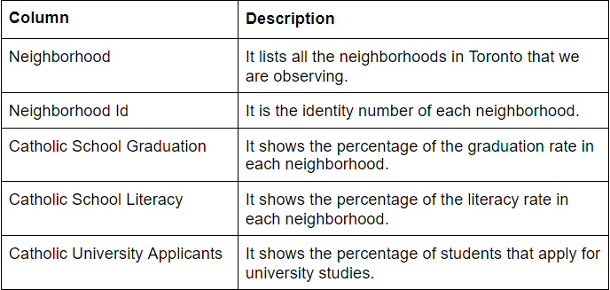
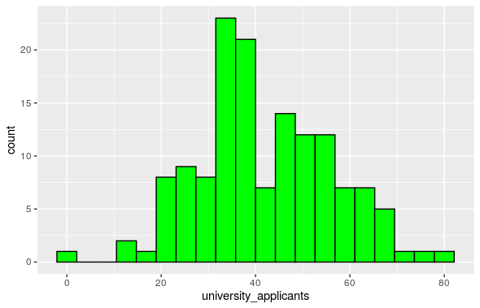

Abstract: The article seeks to explore possible reasons for the low university applications in 2008 based on data from Toronto neighborhoods. The correlation between the data provided is displayed in the format of a graph and following paragraphs explores links and possible reasons for the dip in university applications.
By investigating the data named “rawdata_Ref2008” from “Wellbeing Toronto - Education”, I found that the most of high school students in Toronto were choosing to forego applying to university based on the 2008 data. The data of “Wellbeing Toronto - Education” has three worksheets: Indicator metadata, raw data reference of 2008, raw data reference of 2011. I’ll focus on the second worksheet “rawdata_Ref2008” as the main dataset to continue the research.


I found that the data collected on university applicants in 2008 yielded interesting results. After separating the data into 20 bins, I found that among 140 neighborhoods, the highest percentage lies between 30%-40%. This result really surprised me because I assumed that there would be significant university applicants.
The low applications to post-secondary institutes is likely due the value of a university degree changing in 2008. This can be attributed to the events of the 2008 world financial crisis in which the value of a university degree was much less than before due to many companies going bankrupt and hiring less to save on costs.
The data was not clear that the percentage was collected from every student in the neighborhood or students graduating last year. Therefore, we can’t make the assumption that most of Toronto’s high school students were not interested in applying for university.
Sources: Long, B. (2014, January 27). The Financial Crisis and College Enrollment: How Have Students and Their Families Responded? Retrieved September 28, 2020, from https://www.nber.org/chapters/c12862